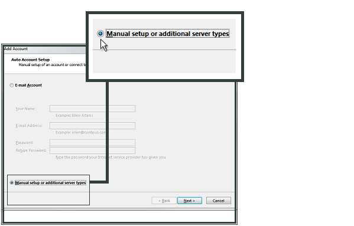
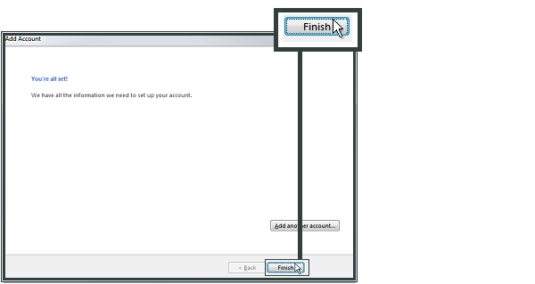

Microsoft Outlook 2013¶
Apri Outlook e seleziona File.

Fai clic su Add Account.

Seleziona Manual setup or additional server types a fai clic su Next
Seleziona POP o IMAP e fai clic su Next

Immetti Your Name e E-mail Address.
Seleziona IMAP come tipo di account.
Nel campo Incoming mail server (IMAP), immetti imap.ewake.it.
Nel campo Outgoing mail server (SMTP), immetti smtp.ewake.it.
Nel campo Logon Information, immetti l’e-mail address e la password creati nel Pannello di controllo.
Fai clic su More Settings.

Seleziona Outgoing Server e quindi My outgoing server (SMTP) requires authentication.

Seleziona Advanced.
Nel campo Incoming server (IMAP), immetti 993 e seleziona SSL.
Nel campo Outgoing server (SMTP), immetti 465 e seleziona SSL.
Fai clic su OK e quindi su Next.
Fai clic su Close.

Il tuo account in Microsoft Outlook 2013 è stato configurato. Fai clic su Fine.
